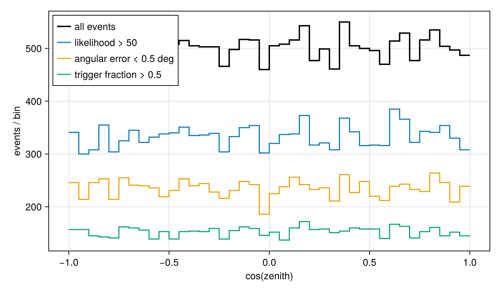

Independent cuts
This example shows how CutHist can be used to evaluate several cuts independently against the same dataset. Each cut produces its own filtered histogram, side by side with the unfiltered baseline.
We start by generating a small CSV file that mimics a reconstruction output, with one row per event and a handful of columns: the zenith angle and three quality estimators.
using Random, CSV, DataFrames
rng = MersenneTwister(42)
N = 20_000
df = DataFrame(
zenith = acos.(2 .* rand(rng, N) .- 1), # uniform in cos(zenith)
likelihood = 30 .+ 60 .* rand(rng, N), # uniform in 30..90
angular_error = 0.05 .+ 2.0 .* rand(rng, N) .^ 2, # peaks near 0.05 deg
trigger_pct = clamp.(0.2 .+ 0.6 .* randn(rng, N), 0, 1),
)
csvfile = tempname() * ".csv"
CSV.write(csvfile, df)We read the CSV back and define three cuts. Each Cut wraps an ad-hoc predicate that inspects a single row and returns a Bool. The label is reused below in the plot legend.
using Cutaway, StatsBase
events = CSV.read(csvfile, DataFrame)
cuts = [
Cut(r -> r.likelihood > 50; label = "likelihood > 50"),
Cut(r -> r.angular_error < 0.5; label = "angular error < 0.5 deg"),
Cut(r -> r.trigger_pct > 0.5; label = "trigger fraction > 0.5"),
]
baseline = Histogram(range(-1, 1; length = 41))
chist = CutHist(baseline, cuts)
for row in eachrow(events)
push!(chist, cos(row.zenith), row)
end
chistCutHist(3 cuts)Each cut is evaluated independently against the row, so chist.hcuts[i] reflects the effect of cut i alone, regardless of the other cuts.
To plot a pre-binned Histogram with Makie we use stairs! directly. The small helper below is reused in the next example.
using CairoMakie
function step_hist!(ax, h::Histogram; kwargs...)
edges = collect(h.edges[1])
weights = Float64.(h.weights)
stairs!(ax, edges, vcat(weights, last(weights)); step = :post, kwargs...)
end
fig = Figure(size = (720, 420))
ax = Axis(fig[1, 1]; xlabel = "cos(zenith)", ylabel = "events / bin")
step_hist!(ax, chist.h; label = "all events", color = :black, linewidth = 2)
for (cut, h) in zip(chist.cuts, chist.hcuts)
step_hist!(ax, h; label = cut.label)
end
axislegend(ax; position = :lt)
fig